Відкритий до пропозицій
Open to work
Роблю продукти від макета до збірки на телефоні.
I build products from the mockup to the build on a phone.
Бекенд-розробник в Onix Systems: PHP, Laravel, Hyperf, PostgreSQL. Там же веду дизайн однієї з фіч мобільного застосунку, тому працюю і в коді, і у Figma.
Backend developer at Onix Systems: PHP, Laravel, Hyperf, PostgreSQL. I also own the design of one of the mobile app's features there, so I work both in code and in Figma.
Поза роботою зробив дві власні речі, які довів до живих користувачів: комерційну платформу для квіткової крамниці, яка працює в продакшені, і застосунок Vyrii на React Native, зібраний під iOS.
Outside work I built two things of my own and took both to real users: a commercial platform for a flower shop that runs in production, and Vyrii, a React Native app already built for iOS.
Власний продукт · 2026 · до релізу
My own product · 2026 · pre-release
Vyrii, маркетплейс послуг і товарів міста
Vyrii, a city marketplace of services and goods
У Кропивницькому запис до барбера, майстра нігтів чи на СТО живе в директі інстаграма й у паперовому зошиті. Клієнт пише ввечері, відповідь отримує зранку, частина заявок губиться разом із перепискою. Великі сервіси на таке місто не заходять, їм невигідно.
In Kropyvnytskyi, booking a barber, a nail artist or a car service lives in Instagram DMs and a paper notebook. A client writes in the evening, gets an answer next morning, and some requests are lost along with the conversation. Large services do not bother entering a town this size.
Vyrii це застосунок, у якому мешканець знаходить заклад і бронює час, а власник з того ж застосунку веде розклад, клієнтів, товари й аналітику. Я веду проєкт один: дослідження, дизайн у Figma, фронтенд, бекенд, база, тести, деплой і збірка під App Store.
Vyrii is an app where a resident finds a venue and books a slot, while the owner uses the same app to run the schedule, clients, products and analytics. I run the project alone: research, design in Figma, frontend, backend, database, tests, deployment and the App Store build.
- Роль
- Role
- Один в проєкті: продукт, дизайн, розробка
- Solo: product, design, development
- Період
- Period
- Березень 2026 - зараз
- March 2026 - now
- Платформи
- Platforms
- iOS, Android, веб з однієї кодової бази
- iOS, Android and web from one codebase
- Front
- React Native, Expo, TypeScript
- Back
- Node.js, TypeScript, PostgreSQL, Redis, Docker
- Дизайн
- Design
- Figma, власна палітра, темна й світла теми
- Figma, own palette, dark and light themes
- Обсяг
- Scope
- 155 закладів у каталозі, 159 автотестів
- 155 venues in the catalogue, 159 automated tests
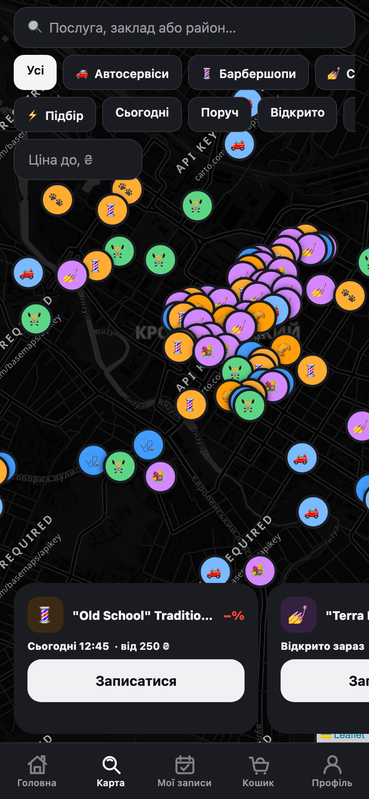
01Карта містаCity map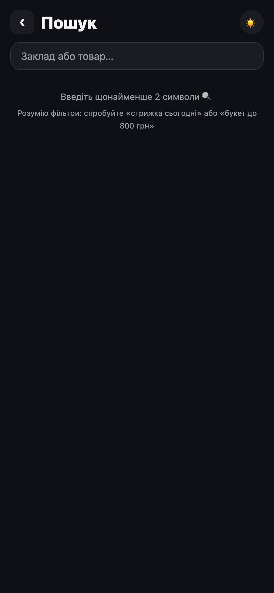
02ПошукSearch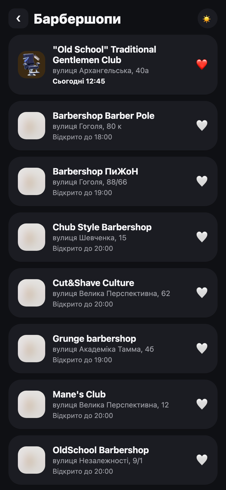
03Категорія з фільтрамиCategory with filters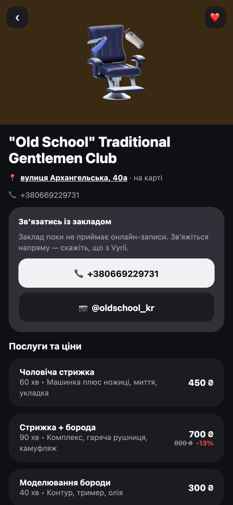
04Картка закладуVenue page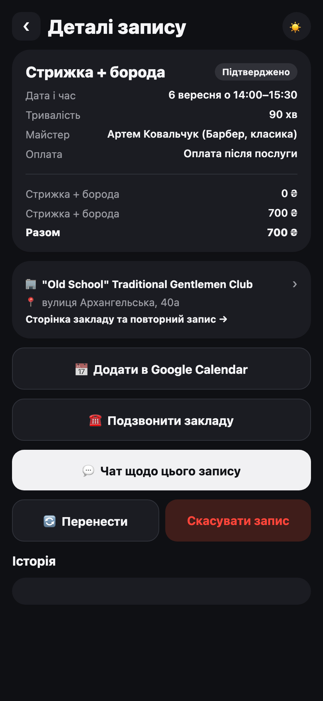
05Деталі записуBooking details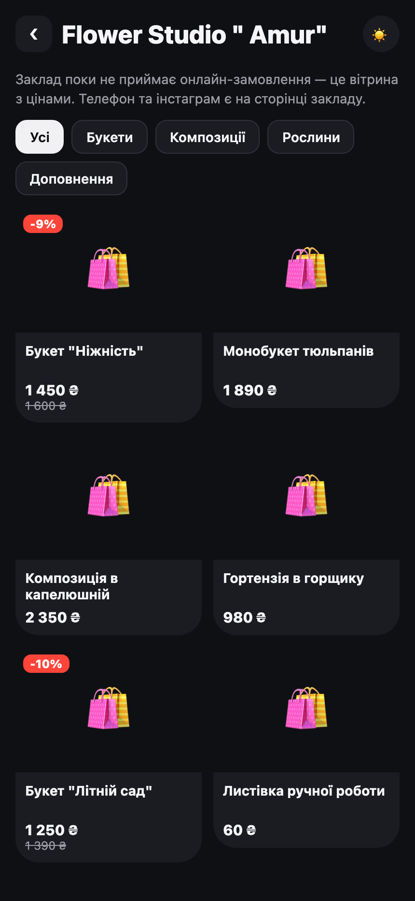
06МагазинShop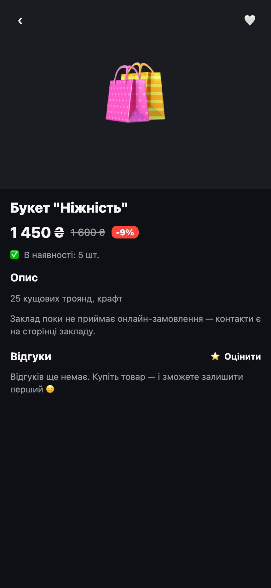
07Картка товаруProduct page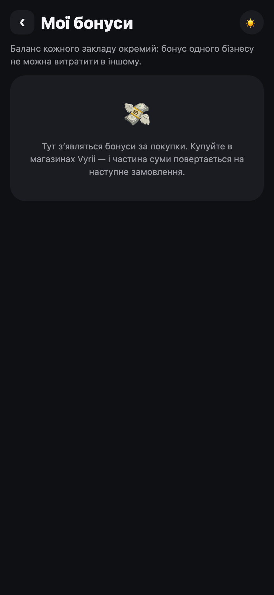
08БонусиLoyalty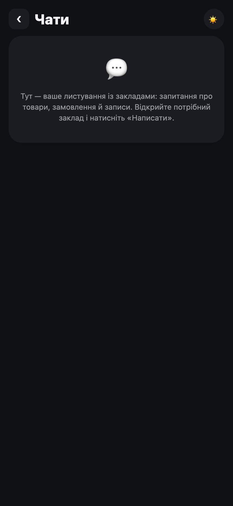
09Чати із закладомChats with a venue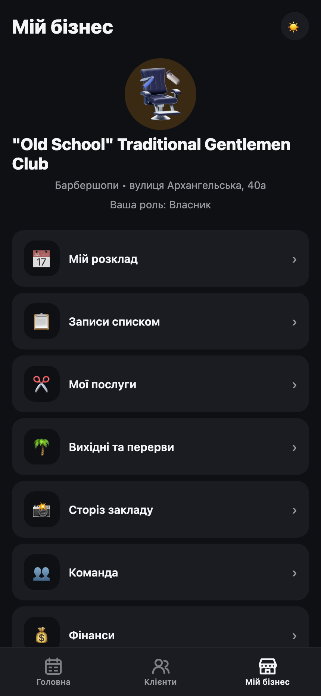
10Кабінет власникаOwner dashboard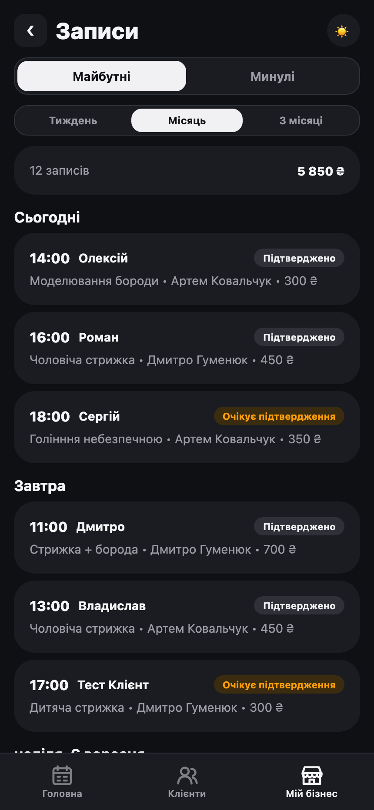
11Записи закладуVenue bookings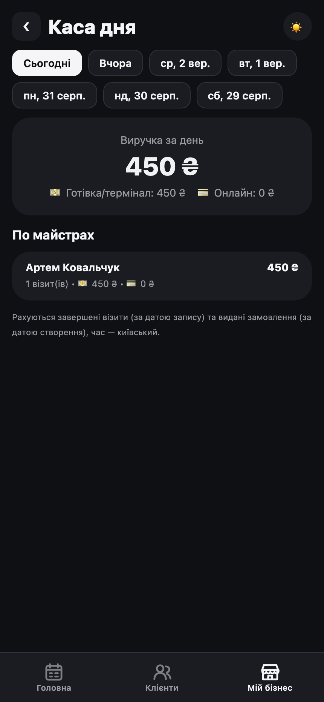
12День майстраMaster's dayПроєкт ще не в App Store, тому архітектуру й продуктові рішення тут не розписую. На співбесіді покажу збірку на телефоні й розповім, як воно влаштоване всередині.
The project is not in the App Store yet, so I do not spell out the architecture and product decisions here. In an interview I will show the build on a phone and walk through how it works inside.
Комерційний досвід · з січня 2026
Commercial experience · since January 2026
Onix Systems, PHP-розробник
Onix Systems, PHP developer
Прийшов стажером у січні 2026, у травні оформили офіційно. Працюю над продакшн-продуктом для мережі роздрібних магазинів: мобільний застосунок, Telegram Mini App і програма лояльності на кілька сотень тисяч користувачів.
I joined as an intern in January 2026 and was hired officially in May. I work on a production product for a retail chain: a mobile app, a Telegram Mini App and a loyalty programme with several hundred thousand users.
Бекенд: PHP, Laravel, Hyperf, Swoole, PostgreSQL, Docker. Робив інтеграції із зовнішніми API, службою підтримки й AI-ботом, який відповідає користувачам замість першої лінії. З червня 2026 хед департаменту дав напрям React Native, щоб я міг заходити на мобільні задачі самостійно.
Backend: PHP, Laravel, Hyperf, Swoole, PostgreSQL, Docker. I built integrations with external APIs, a service desk and an AI support bot that answers users instead of the first support line. Since June 2026 the head of department pointed me at React Native so I can take mobile tasks on my own.
Дизайн у тій самій компанії
Design at the same company
Окремо від коду на мені дизайн однієї з фіч застосунку: накопичувальні штампи за покупки. Вісім задач у Jira, близько тридцяти екранів і станів, компонент-сет на п'ятнадцять варіантів і правила розкладки для решти команди. Продуктові рішення узгоджував напряму з маркетингом і PM, частину початкових вимог після обговорення переписали.
Separately from the code, I own the design of one of the app's features: collectable stamps for purchases. Eight Jira tasks, around thirty screens and states, a component set with fifteen variants, and layout rules for the rest of the team. I agreed product decisions directly with marketing and the PM, and part of the initial requirements was rewritten after discussion.
Назви клієнтських продуктів і макети під NDA, тому їх тут немає.
Client product names and mockups are under NDA, so they are not shown here.
Комерційний проєкт · 2025 - 2026 · у продакшені
Commercial project · 2025 - 2026 · in production
«Між нами», квітковий простір у Telegram
"Mizh Namy", a flower shop that lives in Telegram
Почалось як перше замовлення за гроші, і досі працює в продакшені. Крамниця в Кропивницькому втрачала продажі на черзі: людина хотіла букет по дорозі, а не чекати. Перше рішення було просте, «купи і забери»: вибір букета, оплата онлайн, самовивіз без черги.
It started as my first paid order and it is still running in production. A shop in Kropyvnytskyi was losing sales to the queue: people wanted a bouquet on the way, not a wait. The first solution was simple, "buy and pick up": choose a bouquet, pay online, pick it up without queueing.
Далі стало зрозуміло, що разова покупка це не бізнес. Квіти купують по датах, а дати люди забувають. Тому основною роботою став не магазин, а механіка повернення: щоб клієнт прийшов другий і третій раз, і щоб він не мусив пам'ятати сам.
Then it became clear that a one-off purchase is not a business. Flowers are bought around dates, and people forget dates. So the real work was not the shop but the mechanics of coming back: making the client return a second and a third time, without having to remember on their own.
Що всередині
What is inside
Вітрина в Telegram. Каталог, кошик, оформлення замовлення, оплата через LiqPay. Відкривається як Mini App прямо з бота, встановлювати нічого не треба.
A storefront inside Telegram. Catalogue, cart, checkout, LiqPay payment. It opens as a Mini App straight from the bot, with nothing to install.
Кабінет власника в браузері. Канбан замовлень, CRM клієнтів з історією покупок, каталог і категорії, свята, звіти по продажах.
An owner dashboard in the browser. Order kanban, client CRM with purchase history, catalogue and categories, holidays, sales reports.
Два боти. Клієнтський, з якого починається все, і бот сповіщень для адміністраторів: нове замовлення падає їм у чат одразу, без оновлення сторінки.
Two bots. The customer bot, where everything starts, and an admin notification bot: a new order lands in their chat immediately, with no page refresh.
З чого складається та сама чверть повторних продажів
What that quarter of repeat sales is made of
Чотири зачіпки, які працюють разом.
Four hooks that work together.
Депозит, який згорає
A deposit that expires
Після оплаченого замовлення клієнту нараховується 10% від суми покупки. Він живе два місяці й потім згорає, а перед згорянням бот нагадує. Обмежений термін тут навмисний: безстроковий бонус не створює приводу прийти.
After a paid order the client gets 10% of the purchase back. It lives for two months and then expires, and the bot reminds them before it does. The deadline is deliberate: a bonus that never expires gives nobody a reason to come back.
Відгук, за який теж платять
A review that pays
Після замовлення бот просить оцінку й коментар. За відгук теж нараховується депозит, тому відгуки справді пишуть, а власник бачить, де провалився сервіс.
After an order the bot asks for a rating and a comment. A review also earns a deposit, so people actually write them and the owner sees where service failed.
Свята з попередженням наперед
Holidays with a lead time
Власник заводить свято з полем «за скільки днів попередити». Бот пише клієнтам заздалегідь, щоб букет встигли зробити, а не за годину до.
The owner adds a holiday with a "how many days ahead to warn" field. The bot writes to clients early enough for a bouquet to be made, not an hour before.
Особисті дати клієнта
The client's own dates
Клієнт сам додає свої дати: день народження мами, річниця. Бот нагадає наперед. Це найсильніша зачіпка, бо вона персональна і працює рік за роком.
Clients add their own dates: mother's birthday, an anniversary. The bot reminds them in advance. This is the strongest hook, because it is personal and it works year after year.
Технічно це стейт-машина всередині бота: дев'ять станів, вісімнадцять callback-обробників, чернетка нагадування, яка переживає перезапуск, і повне редагування вже створеної дати.
Technically it is a state machine inside the bot: nine states, eighteen callback handlers, a reminder draft that survives a restart, and full editing of an already created date.
- Роль
- Role
- Один в проєкті: дизайн, код, база, деплой
- Solo: design, code, database, deployment
- Період
- Period
- 2025 - 2026, у продакшені
- 2025 - 2026, in production
- Стек
- Stack
- PHP 8.4, Laravel 13, PostgreSQL 16, Redis, Docker, Nginx, Caddy
- Реальний час
- Realtime
- Laravel Reverb для живого оновлення канбана замовлень
- Laravel Reverb for live order kanban updates
- Оплата
- Payments
- LiqPay, захист форм через Cloudflare Turnstile
- LiqPay, form protection with Cloudflare Turnstile
- Результат
- Result
- Повторні продажі замовника зросли приблизно на чверть
- The client's repeat sales grew by roughly a quarter
Як я працюю
How I work
Перевіряю цифри, поки не почав
I check the numbers before I start
Перед тим як щось лагодити, дивлюсь у базу чи в логи, скільки разів проблема справді трапляється. Після заміру пріоритети часто змінюються.
Before fixing anything I look at the database or the logs to see how often the problem actually happens. Priorities often change after that.
Рішення записую
I write decisions down
Кожне непросте технічне рішення йде в журнал: що вибрав, чому, що відкинув. Через місяць це економить години суперечок із самим собою.
Every non-trivial technical decision goes into a log: what I chose, why, what I rejected. A month later that saves hours of arguing with myself.
Помилку називаю вголос
I name my mistakes
Якщо зламав, кажу прямо й показую, що саме. Приховані баги коштують дорожче за незручну розмову.
If I break something, I say so plainly and show what exactly. Hidden bugs cost more than an awkward conversation.
Дизайн і код в одній голові
Design and code in one head
Малюю в Figma й сам це реалізую, тому одразу бачу, скільки коштує кожне рішення на макеті.
I draw in Figma and implement it myself, so I can see straight away what each decision on a mockup will cost.
Інструменти
Tools
AI-інструментами користуюсь щодня в роботі й у власному проєкті: рев'ю, чернетки, рутинний код. Рішення й відповідальність за результат лишаються за мною.
I use AI tools daily at work and in my own project: reviews, drafts, routine code. The decisions and the responsibility for the result stay with me.
Шлях
Timeline
| 2024 | Перші статичні сторінки, верстка, основи JavaScript. | First static pages, markup, JavaScript basics. | |
| 2024 - 2028 | ЦНТУ, комп'ютерні науки. Поєдную з повною зайнятістю. | Central Ukrainian National Technical University, computer science. Combined with full-time work. | |
| 2025 | «Між нами»: перше комерційне замовлення, яке досі працює в продакшені. | "Mizh Namy": the first commercial order, still running in production. | |
| Січень 2026 | January 2026 | Стажування в Onix Systems, бекенд на PHP. У травні оформлення в штат. | Internship at Onix Systems, PHP backend. Hired officially in May. |
| Березень 2026 | March 2026 | Старт Vyrii: власний маркетплейс міста. | Vyrii starts: a city marketplace of my own. |
| Червень 2026 | June 2026 | Напрям React Native у компанії, паралельно дизайн фічі застосунку. | React Native direction at the company, plus design of an app feature. |
| Вересень 2026 | September 2026 | Vyrii зібраний під iOS, готується вихід на перших клієнтів. | Vyrii built for iOS, preparing for the first clients. |
Напишіть
Get in touch
Шукаю роботу, де можна робити продукт, а не тільки закривати тікети: розробка, дизайн інтерфейсів або те й те разом. Готовий і до повної зайнятості, і до проєктної роботи. Відповідаю в той самий день.
I am looking for work where I can build a product, not only close tickets: development, interface design, or both. Open to full-time and to project work. I reply the same day.